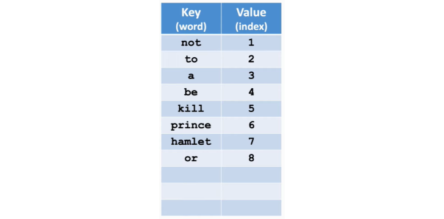
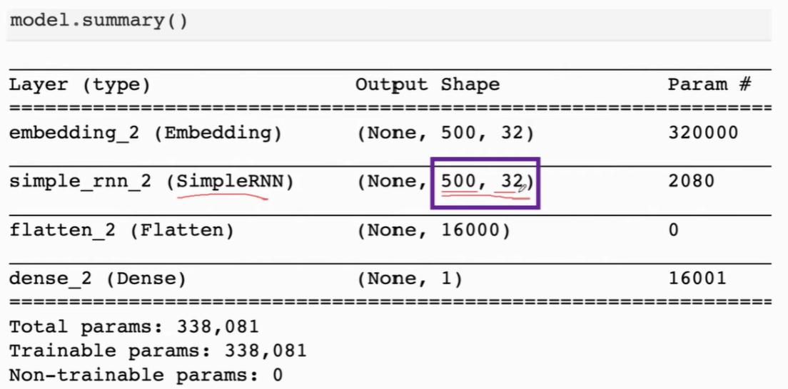
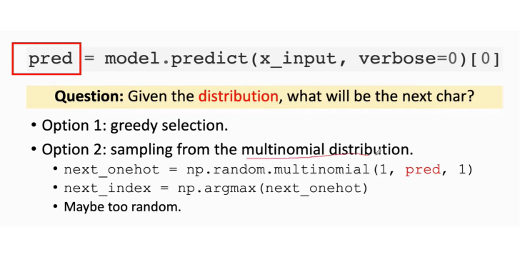

一、文本数据预处理
step1. Tokenization(text to words)
step2. 统计词频

统计完词频后，将这些词按照词频从高到低进行排序：
一般会删掉低频词，也就是排在后面的词，因为这些词有可能是拼写错误的词或者人名。将它们删除以后，可减小vocabulary的维度，这有利于减轻后续计算负担，并且能防止过拟合。
接着将词频改为index表示（index从1开始，0一般用于表示缺失词对应index）：

step3. One-Hot Encoding

如果某个词无法在字典中找到，可以忽略它或者将其index设置为0。
二、文本处理与词嵌入
先按照上一节的步骤进行处理：
后续如有必要，还要做One-Hot Encoding处理，这里没有写出。
由于每句话的长度不一，因此可以限制句子最大长度，多则砍掉，少则补齐(比如zero-padding)。
现在做 Word to Vec。
做Word to Vec的目的是将目前用index数值表示的单词转为用向量表示。One-Hot Encoding也可以做到这一点，但是如果词汇表中的单词总数过多，那么向量的维度就会很大，这样参数量会很多，不可行，因此需要进一步使用Word Embedding。
总结Word to Vec的步骤如下：
第一步，做One-Hot Encoding
第二步，做Word Embedding
其中，d是词向量的维度，由用户自己决定，v是字典所包含的单词总数，$x_i$就是一个词向量。
$P$的每一行表示一个单词的词向量。假设词向量维度为2，可视化如下，其中意义相近的词距离较近，意义不同的词距离较远，中性词则分布在原点附近。
在keras中已经实现了Embedding层：
三、Simple RNN

注意，无论这条链有多长，parameter A 只有1个。
Simple RNN结构如下：
激活函数tanh可以防止梯度消失或者梯度爆炸：
关于参数矩阵A：
用Simple RNN 做IMDB电影评论分类：
这里只使用最后的隐状态

模型summary
开始训练
如果想使用全部的隐状态，就把每一个隐状态的输出concat起来：
网络修改如下：
仅仅是把return_sequences设置为True，并加了一个Flatten层。
此时的模型summary

SimpleRNN的参数总结：
然而，SimpleRNN并不擅长long-term dependence。
四、LSTM
LSTM拥有更长的记忆。
SimpleRNN只有一个参数矩阵A，而LSTM拥有更多的参数矩阵。
LSTM靠这条传输带C连接过去与未来，并且可以避免梯度消失：
LSTM中包含许多门，接下来逐一看一下。
遗忘门
其中的输入$a$是一个向量，它先经过Sigmoid映射到0与1之间，将这个结果记作$f$，$f=\sigma(a)$，然后$f$与$c$之间做逐点乘积，得到output。
$f$的具体计算过程为：
其中$W_f$便是遗忘门的参数矩阵。
输入门
输入门包含两个分支，因此有两个参数矩阵
现在我们已经计算得到了遗忘门和输入门，并且又已知传输带上旧值$C_{t-1}$，于是可以更新传输带上的值($C_t$)了：
遗忘门用于决定$C_{t-1}$中哪些元素需要遗弃，哪些需要保留，而输入门用于添加新的信息。
这里，更新得到的$C_t$接下来将被用于计算新的状态向量$h_t$。
输出门
先计算$o_t$
然后就可以计算状态向量$h_t$了
LSTM总共有4个参数矩阵（遗忘门一个，输入门两个，输出门一个）：
Keras中也集成了LSTM，这里还是基于IMDB电影评论分类问题：
由于LSTM比SimpleRNN的效果好，因此当用到RNN的时候，一般指的就是LSTM。
五、Stacked RNN
就像堆叠多个卷积层那样，将RNN进行堆叠，就得到了Stacked RNN：
图中圈出来的$h_t$可以看作是提取”i love the … much”得到的特征向量。
六、双向RNN

训练两条RNN，一条从左往右，另一条从右往左，两条RNN完全独立，不共享参数和状态，各自独立输出自己的状态向量h，然后将它们输出的状态向量做concat，记作y。
如果有多层RNN(即Stacked RNN)，则将本层输出的y作为上一层RNN的输入。
如果只有一层RNN，那么把y丢弃即可，最后将$h_t’$和$h_t$concat起来，作为”i love the … much”提取得到的特征向量。
双向LSTM的记忆能力比普通RNN要好。

七、预训练

八、文本生成
注意，这里的文本生成器只能是单向的。
1. 准备数据
全部文本：
用前60个字符去预测下一个字符，以3为步长，将全部文本数据分割成若干条训练样本，每个样本的格式为(segment,next_char)
2. Charactor to Vector
按照之前的步骤，后续还需要对One-Hot结果做Word Embedding，以便降低维度。但是，由于这里用的不是词，而是字符，并且不同字符的总数有限，One-Hot结果的维度也不算太大，因此可以不做Word Embedding。

3. 搭建模型
4. 训练模型
5. 预测
获取下一个字符的预测结果：

举个完整的例子：
九、机器翻译与Seq2Seq模型
以英语翻译成德语为例。
1. Tokenization & Build Dictionary

2. One-Hot Encoding
对于英语：
对于德语同理可得。
3. 搭建&训练模型
Deoder的初始状态是Encoder的最后一个状态。
Decoder相当于上一节中的文本生成器。
Decoder最开始的输入是起始符\t，预测得到下一个字符，比如是m，然后做反向传播更新参数；
下一次，Decoder的输入是两个字符：\t和m，预测得到下一个字符，比如是a，然后做反向传播更新参数；
下一次，Decoder的输入是三个字符：\t，m和a，预测得到下一个字符，然后做反向传播更新参数；
重复这一过程
直到最后得到终止符\n
4. 预测(翻译)
训练完模型后，就可以做推理了，即”英语翻译成德语”.
对于输入的英语，经过编码器提取到这句话的特征($states(h_0,c_0)$)
将($ststes(h_0,c_0)$)作为解码器的初始状态，解码器的初始输入是开始符\t
有了新的输入，解码器就会更新$states$为($ststes(h_1,c_1)$)，并预测下一个字符，比如是m
现在，解码器的状态变为($ststes(h_1,c_1)$)，并且新的输入是m，解码器继续更新
继续更新
不断进行下去，始终将新的预测字符作为下一次解码器的输入
当预测得到终止符\n时，预测完毕，也就完成了英语到德语的翻译
以上的Seq2Seq还可以改进(当句子太长时，容易出现遗忘问题)，比如使用双向LSTM，采用词而不是字符进行预测(可以减轻序列长度，因为一个单词包含多个字符)，多任务学习等。
当然，还有一种改进方法，也就是目前非常火的Attention！
十、Attention(注意力机制)
在这一节，我们将是使用Attention来改进Seq2Seq模型。
在Seq2Seq中，Encoder的作用是提取输入句子的特征（最后一个状态），将特征喂入Decoder。当句子太长时，Encoder可能记不住这么多信息，从而出现遗忘，此时如果把Encoder提取到的特征喂入Decoder，就不那么准确了。
Attention解决了遗忘问题！
Seq2Seq的解码器只能看到编码器最后一个状态$h_m$，也就是上面说的提取得到的特征。而加入Attention之后，解码器能够看到编码器的每个状态，即$h_1$到$h_m$，并且Attention会为每个状态赋予一个权重$\alpha$，它由解码器当前状态$s$与编码器的状态($h$)计算得到，上图中给出了计算表达式。
具体地计算方法有很多，在原论文中的计算方法是这样的：
其中的向量$v$与矩阵$w$是可学习的。
但是用的更多的是下面这种计算方法：
下面看一下Attention的具体运作流程：
其中的Context vector（c） 是每一时刻产生的不同的语言编码向量 ，s是解码器的状态，$c_0$对应$s_0$，且c在接下来会不断被更新。
当输入x_1'时，需要更新s（$s_0 -> s_1$），更新时用到了$c_0$的信息（$c_0$包含了编码器的所有状态信息，因此不会产生遗忘问题）。
得到解码器新的状态$s_1$之后，再利用上面的公式计算新的$\alpha$，进而得到新的c，也就是$c_0 -> c_1$
当新的输入x_2'进入解码器时，需要更新s（$s_1-> s_2$）
得到解码器新的状态$s_2$之后，再利用上面的公式计算新的$\alpha$，进而得到新的c，也就是$c_1 -> c_2$
一直进行下去，直到结束
十一、Self-Attention（自注意力机制）
在上一节，我们使用注意力机制改进了Seq2Seq模型。事实上，注意力机制不仅仅可以用在Seq2Seq模型上。
本节讲解如何将Attention用在SimpleRNN上。
对于一个SimpleRNN，首先初始化$c_0$和$h_0$为全0，接着输入一个x1，需要计算$h_1$
得到$h_1$之后，需要计算$c_1$
c是h的加权求和，这里由于$h_0$初始化为0，因此$c_1=h1$
接着输入一个x2，需要计算$h_2$
得到$h_2$之后，需要计算$c_2$
$c_2$应该是$h_0$，$h1$与$h_2$的加权求和，因此需要计算权重$\alpha$
注意，由于$h_0$为0，因此在之后的计算中始终忽略它
其中i也可取3.
然后就可以计算$c_2$了
接着输入一个x3，需要计算$h_3$
计算权重
然后就可以计算$c_3$了
重复这个过程，直到结束。
在上一小节，某一个$\alpha$是由解码器中的某一个状态向量s与编码器的所有状态向量计算到的，而这里的$\alpha$是由当前时刻的状态向量与所有状态向量(包括当前时刻本身)计算得到的，或许这就是Self Attention这个名字的由来吧。